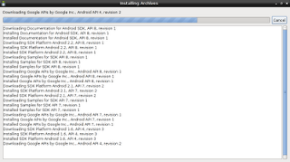

Instalación del SDK de Android en Linux
Posted on jue 27 mayo 2010 in Tutorial Linux • 1 min read
Para poder acceder desde Debian en el celular con Android lo primero que se tiene que hacer es bajar el SDK de Android desde el siguiente enlace.
Luego hay que descomprimir el android-sdk_r06-linux_86.tgz.
tar -xvzf android-sdk_r06-linux_86.tgz
Luego cambiarse al directorio android-sdk_r06-linux_86 y al directorio tools.
cd android-sdk_r06-linux_86/tools
Ejecutar android:
./android
Aparecerá la siguiente ventana. Se selecciona los paquetes a instalar.

Luego se acepta la licencia de todos los paquetes y empieza el proceso de instalación como lo muestra la figura.

Al terminar el proceso de instalación de APIs y librerías del SDK se selecciona Dispositivos virtuales.

Se crea uno como lo muestra la figura.
Al darle crear se mostrará una ventana con los resultados de la creación del dispositivo virtual al darle Aceptar el dispositivo aparecerá en la lista de dispositivos.

Al darle al botón start se abre una ventana que muestra opciones para lanzar el disposititvo virtual.

Al darle al botón Launch se iniciará una virtualización de un celular con Android como lo muestra la siguiente figura.

En el siguiente post se explicará el uso de adb el cual permite acceder al celular real.
===
¡Haz tu donativo! Si te gustó el artículo puedes realizar un donativo con Bitcoin (BTC) usando la billetera digital de tu preferencia a la siguiente dirección: 17MtNybhdkA9GV3UNS6BTwPcuhjXoPrSzV
O Escaneando el código QR desde billetera: